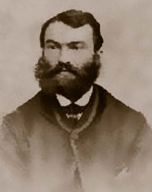

The man who revolutionized medicines.

1755 Born in Hoxton Square, Shoreditch, London, on 11 April, the son of the apothecary-surgeon John Parkinson and his wife Mary
1771 Begins his apprenticeship to his father
1776 Becomes a pupil dresser (student) at the London Hospital
1777 Receives the Silver Medal of the Humane Society
1778 Completes his apprenticeship
1781 Marries Mary Dale
1784 Awarded membership of the Company of Surgeons, the precursor of the Royal College of Surgeons, by gaining its diploma
1785 Attends course of lectures given by the surgeon John Hunter
1785 His son, John William Keys Parkinson, is born
1786 Joins Guy's Hospital Physical Society
1787 Elected Fellow of the Medical Society of London
1790 Joins Society for Constitutional Information
1792 Joins London Corresponding Society
1792-96 Publishes political pamphlets advocating constitutional reform
1796 Gives evidence at the trial for treason of Robert Crossfield
1799 Publishes Medical admonitions
1800 Publishes The hospital pupil and The villagers' friend and physician
1804 Publishes volume 1 of Organic remains of a former world
1807 Publishes volume 2 of Organic remains. Co-founder of the Geological Society of London
1811 Publishes volume 3 of Organic remains, and meets palaeontologist Gideon Mantell
1812 Communicates a paper on appendicitis written by his son, John William Keys Parkinson, to the Medical and Chirurgical Society
1813 Appointed to the Council of the Geological Society of London
1817 Publishes An essay on the shaking palsy
1817 Becomes President of the Association of Apothecaries and Surgeon-Apothecaries of England and Wales, a post which he holds for two years
1823 Receives Gold Medal of the Royal College of Surgeons on his 68th birthday. Medal is awarded in explicit recognition of his palaeontological researches
1824 Dies on 21 December after suffering stroke. John William Keys Parkinson inherits his medical practice
1865 The Scottish physician, Edward Sanders, first coins the term Parkinson's disease
1872 The neurologist Jean Martin Charcot coins the term la maladie de Parkinson